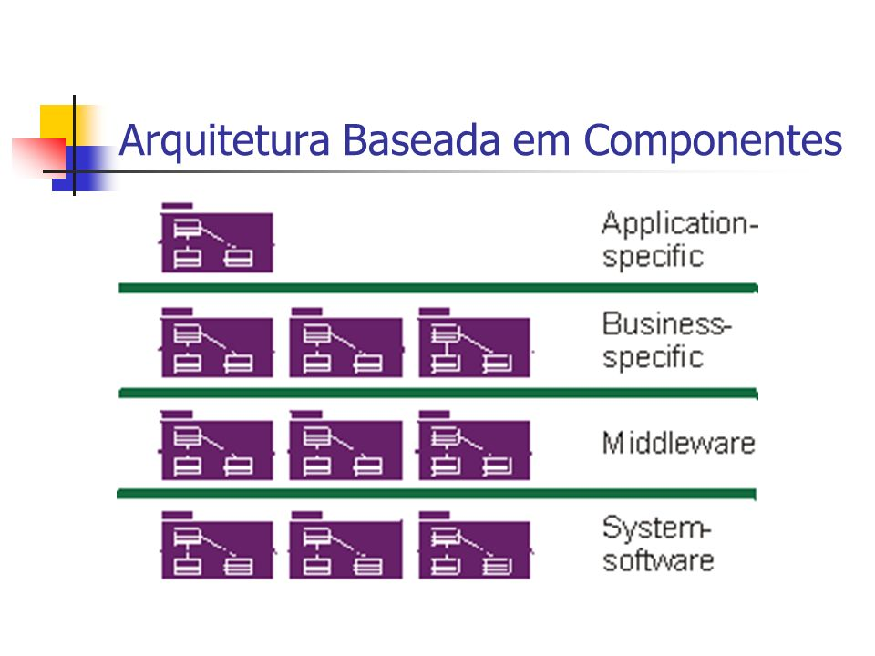
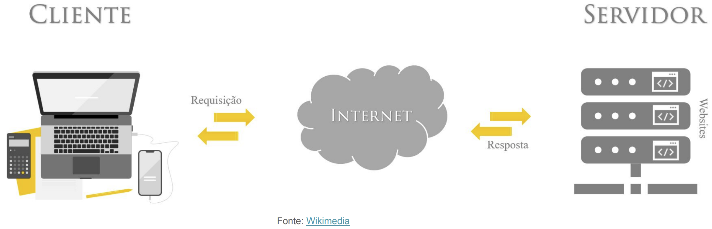
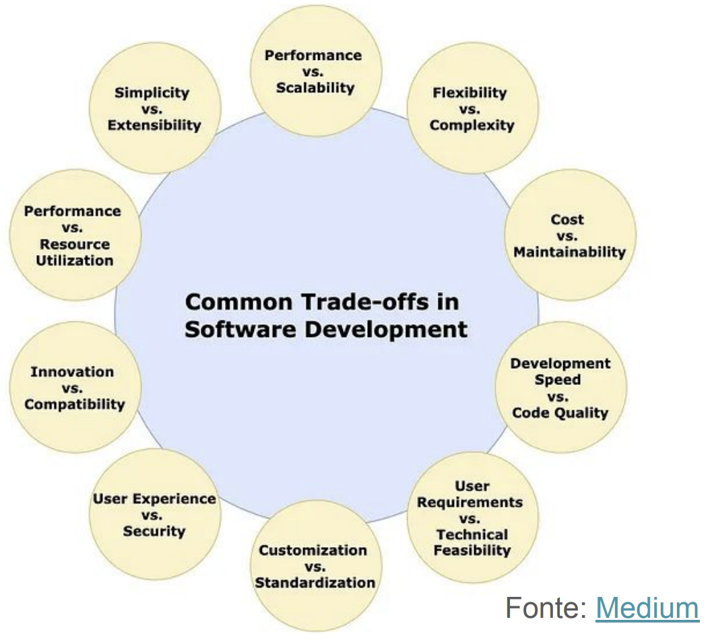

Disciplinas
SISTEMAS DE INFORMAÇÃO Concluído
Materiais
Vídeo 1 - [UFMS Digital] Sistemas de Informação - Módulo 2 - Unidade 1 - O que é arquitetura de componentes de sistemas de informação e Arquitetura cliente-servidor sendProf° ministrante: Awdren de Lima Fontão
Componente de sistema
Um componente arquitetural, no contexto de arquitetura de software ou sistemas, refere-se a uma parte identificável, modular e intercambiável de um sistema maior.

Arquitetura de sistema
"Arquitetura: os conceitos e regras que definem a estrutura, o comportamento semântico e os relacionamentos entre as partes de um sistema; um plano de algo a ser construído. Inclui os elementos que constituem o fato, os relacionamentos entre esses elementos, as restrições que afetam esses relacionamentos, um foco nas partes do fato e um foco no fato como um todo." (Valente, 2020)
Arquitetura de sistema de informação
A arquitetura de sistemas de informação refere-se à estrutura organizacional e ao design dos componentes que compõem um sistema de informação.
Ela define como os processos, dados, tecnologias e interfaces estão organizados para atender aos objetivos organizacionais.
Níveis de Abstração
Além dos pontos de vista, uma arquitetura de sistema requer níveis de especificação.
À medida que é desenvolvida, a arquitetura evolui de uma especificação geral e abstrata para uma especificação detalhada e mais específica.
- Nível do modelo: o sistema e seus agentes;
- Nível da análise: particionamento inicial do sistema para estabelecer uma abordagem conceitual;
- Nível do design: produção do modelo de análise para hardware, software e pessoas;
- Nível de implementação: produção do modelo de design para configurações específicas.
Princípios de design arquitetural
- Modularidade:
- Divida o sistema em módulos independentes, promovendo facilidade de manutenção e reusabilidade.
- Encapsulamento:
- Proteja a implementação interna dos módulos, expondo apenas interfaces necessárias. Isso facilita a evolução sem afetar outros componentes.
- Coesão e acoplamento:
- Busque alta coesão dentro dos módulos (funcionalidades relacionadas) e baixo acoplamento entre módulos (dependências mínimas).
- Abstração:
- Represente conceitos complexos de maneira simplificada, focando naquilo que é essencial para o entendimento e utilização.
- Reusabilidade:
- Desenvolva componentes que possam ser reaproveitados em diferentes partes do sistema ou em projetos futuros.
- Separation of Concerns (Separação de preocupações):
- Divida o sistema em partes que se concentram em preocupações específicas, facilitando a compreensão e manutenção.
Modelo cliente-servidor
O modelo cliente-servidor é uma arquitetura de software que divide as funcionalidades do sistema entre duas partes distintas:
- o cliente, que solicita serviços;
- o servidor, que fornece esses serviços.
- Estabelece uma clara separação entre as responsabilidades do cliente e do servidor, promovendo a distribuição de tarefas.
- A interação ocorre por meio de requisições do cliente e respostas do servidor, geralmente via rede.

Vantagens do cliente-servidor
- Escalabilidade:
- Permite a escalabilidade horizontal e vertical, distribuindo a carga entre múltiplos servidores ou aumentando os recursos de um servidor central.
- Flexibilidade:
- Facilita a atualização independente do cliente e do servidor, pois as mudanças em uma parte não necessariamente afetam a outra.
- Centralização de dados e lógica:
- O servidor centraliza a lógica de negócios e a gestão de dados, assegurando consistência e centralização das regras.
- Manutenção facilitada:
- Possibilita atualizações e manutenções mais eficientes, já que as alterações podem ser implementadas no servidor, sem afetar diretamente os clientes.
- Exemplos de aplicações práticas:
- Websites, sistemas de e-commerce, aplicações bancárias online são exemplos comuns que seguem o modelo cliente-servidor.
Trade-offs e decisões de design
Na engenharia de sistemas, trade-offs representam escolhas entre diferentes elementos do design, onde melhorar um aspecto muitas vezes implica em sacrificar outro.

- Importância nas decisões de design:
- São inerentes ao processo de design, pois raramente é possível otimizar todos os aspectos simultaneamente.
- Abordagem consciente:
- O arquiteto deve tomar decisões conscientes, considerando as implicações de trade-offs para garantir que as escolhas estejam alinhadas com os objetivos do sistema.
Alguns exemplos
- Desempenho vs. eficiência de desenvolvimento:
- A busca por um desempenho superior pode aumentar a complexidade do código, afetando a eficiência do desenvolvimento.
- Flexibilidade vs. segurança:
- Um sistema altamente flexível pode ser mais difícil de proteger contra ameaças de segurança, enquanto medidas rigorosas de segurança podem restringir a flexibilidade.
- Custo vs. qualidade:
- A redução de custos pode levar a compromissos na qualidade do software, impactando a satisfação do usuário e a manutenção futura.
Conclusão
Organização sólida: a arquitetura de sistemas de informação oferece uma estrutura organizacional sólida, crucial para a construção e evolução de sistemas eficientes;
Tomada de decisões eficaz: uma arquitetura bem projetada facilita a tomada de decisões eficaz, promovendo a escalabilidade, a manutenibilidade e a adaptação contínua do sistema;
Impacto nos resultados: compreender e aplicar os princípios arquiteturais é fundamental para o sucesso de projetos de sistemas de informação, influenciando diretamente a qualidade, a eficiência e a capacidade de inovação do software desenvolvido.